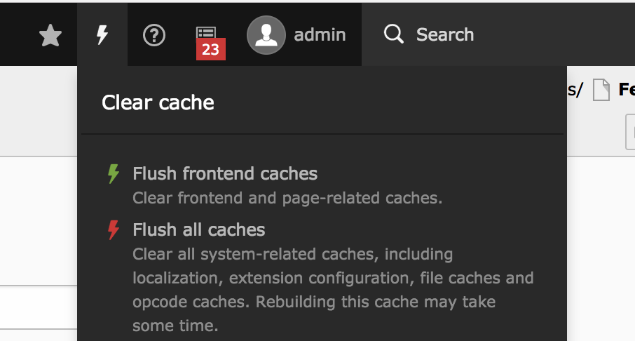

Münchener TYPO3 User Group
TYPO3 8 LTS Release
Features und Änderungen
History
Releases
TYPO3 7LTS 10. November 2015
TYPO3 8.0 22. März 2016
6 weitere Sprint-Releases bis 14. Februar 2017
TYPO3 8LTS 04. April 2017
Änderungen
Version Feature Breaking Deprecation
8.0 24 97 28
8.1 15 11 8
8.2 7 9 12
8.3 10 36 9
8.4 10 21 10
8.5 17 23 18
8.6 49 41 18
8.7 10 7 38
Summe 142 245 141
Empfohlenes System-Setup
- PHP: Version 7 oder 7.1
- Datenbank: mysql 5.5 oder aktueller
- Memory-Limit: 128 MB RAM
- Speicherplatz: 200 MB Festplattenplatz
- Graphik: IM / GM Version 6
- PHP Einstellungen
- max_execution_time: 240s
- max_input_vars: 1500
- PHP opcache
- apcu-Caching ( > 100MB RAM )
Entfernte System-Extensions
EXT:rtehtmlarea
- ersetzt durch EXT:rte_ckeditor
- TER: https://typo3.org/extensions/repository/view/rtehtmlarea
- Github: https://github.com/FriendsOfTYPO3/rtehtmlarea
EXT:form / EXT:form_legacy
- ersetzt durch neues Form-Framework
- TER: https://typo3.org/extensions/repository/view/form_legacy
- Github: https://github.com/FriendsOfTYPO3/form_legacy
RTE CKEditor
seit 8.5 im Core
seit 8.6 konfigurierbar & Standard
Konfiguration in yaml Format
imports:
- { resource: "EXT:rte_ckeditor/Configuration/RTE/Processing.yaml" }
- { resource: "EXT:rte_ckeditor/Configuration/RTE/Editor/Base.yaml" }
editor:
config:
format_tags: "p;h1;h2;h3;pre"
toolbarGroups:
- { name: clipboard, groups: [clipboard, undo] }
Tutorial: https://typo3worx.eu/2017/02/configure-ckeditor-in-typo3/
EXT:form - neue Extension für Formulare
https://de.slideshare.net/pk77/frontend-formulare-in-typo3-8-lts
Backend UI - Modul "Seite"
- (fast) vollständig responsive
- neue Buttons links oben
Backend UI - Weitere Beispiele
Element Browser
Modul "Liste"
Modul "Reports"
Backend UI
Fav-Icon
bisher: TYPO3-Logo
jetzt: individuell möglich
Backend-Logo
bisher: Konfiguration im TBE_STYLES
jetzt: im BE in der Extension-Konfiguration
Language Handling
Free vs. Connected Mode
Backend UI: Scheduler
Run task at next cron run
Collapse task groups
Backend: Funktionen I
Modul "Seite"
Drag & Drop kann jetzt auch Elemente kopieren
Strg bzw. Ctrl-Taste beim Ziehen gedrückt halten
Modul "Papierkorb"
Admins können rekursiv Seiten wieder herstellen
Backend: Funktionen II
Backend-Layout
Layout - Wizard jetzt inline
Backend: Funktionen III
Linkservice
neue Syntax: t3://page | file | folder
neue Typen via Linkhandler
verbesserte Linkfelder
Linkhandler
vollständig im Core
Konfiguration analog der Extension
Backend: Funktionen IV
Modul "Seite": Zwischenablage
Paste Icon in Modul "Seite"
Modul "Sprachen": Löschen
Sprachdateien können entfernt werden
Backend: Image Manipulation
Tool UI
- Varianten möglich
- individuelle Seitenverhältnisse
Backend: Image Manipulation
Konfiguration im TCA
// EXT:template/Configuration/TCA/Overrides/sys_file_reference.php
$GLOBALS['TCA']['sys_file_reference']['columns']['crop']['config'] = [
'type' => 'imageManipulation',
'cropVariants' => [
'default' => [
'title' => 'Standard-Cropping',
'allowedAspectRatios' => [
'NaN' => [
'title' => 'LLL:EXT:lang/Resources/Private/Language/locallang_wizards.xlf:imwizard.ratio.free',
'value' => 0.0
],
'2:1' => [
'title' => "2:1",
'value' => 2 / 1
],
'1:2' => [
'title' => '1:2',
'value' => 1 / 2
],
'3:1' => [
'title' => '3:1',
'value' => 3 / 1
],
'1:3' => [
'title' => '1:3',
'value' => 1 / 3
],
'16:9' => [
'title' => '16:9',
'value' => 16 / 9
]
]
]
]
];Backend: Image Manipulation
Konfiguration im Page-TSconfig
TCEFORM.sys_file_reference.crop.config.cropVariants {
default {
title = Default desktop
selectedRatio = NaN
allowedAspectRatios {
NaN {
title = free
value = 0.0
}
}
}
specialMobile {
title = Our special mobile variant
selectedRatio = NaN
allowedAspectRatios {
4:3 {
title = ratio 4/3
value = 1.3333333
}
}
}Backend: Caches I
System-Menü
- Frontend Caches
- System Caches
- InstallTool
Kontext-Menü
Löschen des Seiten-Caches auch im
Kontext-Menü möglich
Backend: Caches II
PECL-Module "memcached"
- zuätzliches PECL - Modul
- Konfiguration in der AdditionalConfiguration
Reorganisation 'typo3temp'
/typo3temp/
/typo3temp/assets/
/typo3temp/assets/js
/typo3temp/assets/images
/typo3temp/assets/css
/typo3temp/assets/compressed
/typo3temp/assets/_processed_
/typo3temp/var/
/typo3temp/var/Cache
/typo3temp/var/ExtensionManager
/typo3temp/var/InstallToolSessions
/typo3temp/var/charset
/typo3temp/var/locks
/typo3temp/var/logs
/typo3temp/var/transientSymfony Console
Aufruf
mit composer
bin/typo3 backend:lock http://www.mydomain.com/maintenance.htmlohne composer
typo3/sysext/core/bin/typo3 backend:lock http://www.mydomain.com/maintenance.htmlRegisterung eines Kommandos
return [
'backend:lock' => [
'class' => \TYPO3\CMS\Backend\Command\LockBackendCommand::class
],
'referenceindex:update' => [
'class' => \TYPO3\CMS\Backend\Command\ReferenceIndexUpdateCommand::class
]
];Datei: EXT:meine_extension/Configuration/Commands.php
InstallTool
Upgrade-Wizards resetten
Upgrade Analysis
InstallTool
Notwendige Änderungen am TCA
- Analyse des TCA der installierten Extensions
- Ausgabe der notwendigen / empfohlenen Änderungen
InstallTool
Generierung der Autoload-Dateien
Nur im "Non Composer"-Mode
Dateien im Verzeichnis "typo3conf"
Frontend
CE "Filelinks"
Titel statt Dateiname (falls vorhanden)
Seitentyp "Shortcut"
übernimmt jetzt alle Parameter
EXT:reports

E-Mail-Benachrichtigungen
- Task für den Scheduler
- Liste von E-Mail-Adressen
UTF-8 Warnung
Zeichensatz des Servers wird verwendet
Inhalte in UTF-8 gespeichert
TS-Option "config.renderCharset" entfernt
TypoScript
config.locale_all
Fallback kann jetzt konfiguriert werden
Kommasepatierte Liste des Locales
Zugriff auf Flexform
lib.flexformContent = CONTENT
lib.flexformContent {
table = tt_content
select {
pidInList = this
}
renderObj = COA
renderObj {
10 = TEXT
10 {
data = flexform: pi_flexform:settings.categories
}
}
}Page-TSconfig
Such-Ebenen konfigurierbar
gilt für Suche im Modul "Seite" und Modul "Liste"
mod.web_list.searchLevel.items {
-1 = EXT:lang/Resources/Private/Language/locallang_core.xlf:labels.searchLevel.infinite
0 = EXT:lang/Resources/Private/Language/locallang_core.xlf:labels.searchLevel.0
1 = EXT:lang/Resources/Private/Language/locallang_core.xlf:labels.searchLevel.1
2 = EXT:lang/Resources/Private/Language/locallang_core.xlf:labels.searchLevel.2
3 = EXT:lang/Resources/Private/Language/locallang_core.xlf:labels.searchLevel.3
4 = EXT:lang/Resources/Private/Language/locallang_core.xlf:labels.searchLevel.4
} Alle Tabellen verstecken
bisher: nur ausblenden einzelner Tabellen
jetzt: alle ausblenden und einzelne aktivieren
mod.web_list.hideTables = *
mod.web_list.table.tx_cal_event.hideTable = 0 Page-TSconfig
Vorschau von Inhaltselementen
bisher: nur über einen Hook
jetzt: über Page-TSconfig
Alle Felder des Flexform über die Fluid-Array "pi_flexform_transformed" erreichbar
mod.web_layout.tt_content.preview.list.example = EXT:site_mysite/Resources/Private/Templates/ \
Preview/ExamplePlugin.html Element-Browser deaktivieren
Page TSconfig
TCEFORM.table_name.field_name.config.appearance.elementBrowserEnabled = 0User-TSconfig
Element-Browser deaktivieren
über Option:
page.TCEFORM.table_name.field_name.config.appearance.elementBrowserEnabled = 0Modul "Dateiliste" - max. Dateianzahl je Seite
Festlegen mit
options.file_list.filesPerPage = 40Ex-/Import - Funktion deaktiviert
Reaktivieren mit:
options.impexp.enableImportForNonAdminUser = 1FLUID
Standalone FLUID
eigenes Composer-Package
SelectViewHelper
f:form.select.option
bisher: Übergabe der Argumente nur als Array
jetzt: auch als Kindelemente
f:form.select.optgroup
neu: Gruppierung der Optionen
FLUID
StripTagsViewHelper
neue Option: allowedTags
Access ObjectStorage as Array in Fluid
bisher: nur über Objekt-Namen
jetzt: auch über den Index oder einen Counter
{myObject.objectstorageproperty.array.4}
{myObject.objectstorageproperty.array.{dynamicIndex}}BytesViewHelper
FLUID
Fluid - Debug
Adminpanel hat neue Option
Fluid Styled Content
"Streamlined" mit CSC
gleiche Felder
gleiche Content-Element
Default-Layout
bisher: HeaderFooter, ContentFooter, et al.
jetzt: alle CE das gleiche Layout
neu: "Drop-Ins"
Partials/DropIn/After/All.html
Partials/DropIn/Before/All.htmlEntwicklung
Javascript
- Typescript im TYPO3 core
- Unittests für Javascript möglich
Testing Framework
- eigenes Composer-Package
- Namespace: TYPO3\TestingFramework\Core
Session Storage Framework
- verschiedene Backends vorhanden
- eigene Implementationen möglich